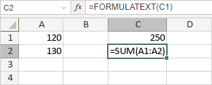

FORMULATEXT funkcija
Funkcija FORMULATEXT je jedna od funkcija za pretragu i reference. Koristi se za vraćanje formule kao niza znakova (tj. tekstualnog niza koji se prikazuje u traci za formule kada izaberete ćeliju koja sadrži formulu).
Sintaksa
FORMULATEXT(reference)
Funkcija FORMULATEXT ima sledeći argument:
| Argument | Opis |
|---|---|
| reference | Referenca na jednu ćeliju ili opseg ćelija. |
Napomene
Ako referencirani opseg ćelija sadrži više od jedne formule, funkcija FORMULATEXT vraća vrednost iz gornje leve ćelije tog opsega. Ako referencirana ćelija ne sadrži formulu, funkcija FORMULATEXT vraća vrednost greške N/A.
Imajte u vidu da je ovo formula niza. Da biste saznali više, pročitajte članak Umetanje formula niza.
Kako primeniti funkciju FORMULATEXT.
Primeri
Slika ispod prikazuje rezultat koji vraća funkcija FORMULATEXT.
